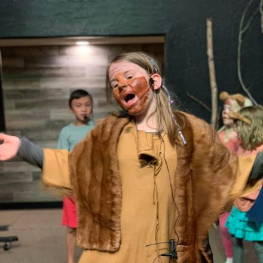
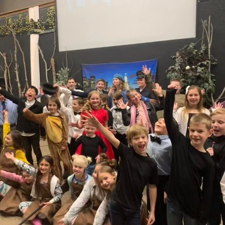
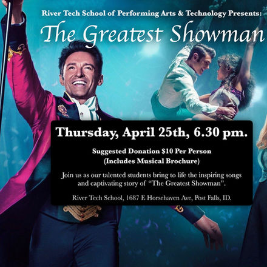
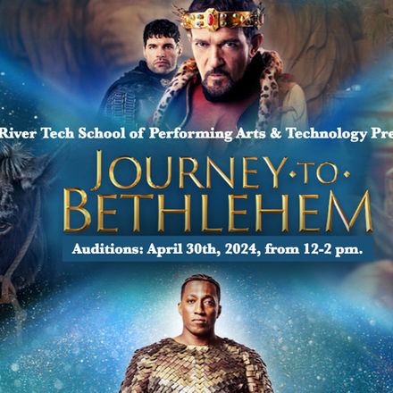
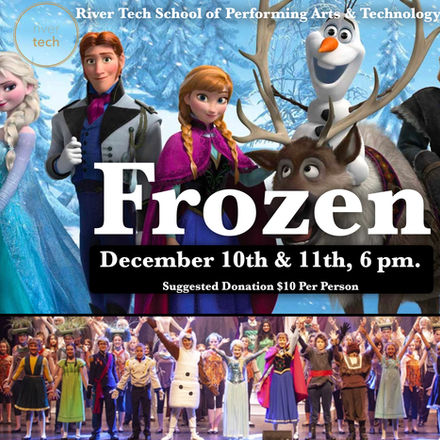

Performing Arts
The Performing Arts live at the very heart of River Tech's identity. Music, drama, and dance awaken creativity, discipline, and joy in students, shaping both their character and their confidence. Through the arts, they learn to tell stories that matter, to move hearts, and to bring beauty into a world that desperately needs it.
At River Tech, we see artistic expression as a calling, an opportunity to reflect the creativity of the Creator. Every rehearsal, every performance, every note sung or line spoken is a step toward mastering both craft and spirit.
"Sing to him a new song; play skillfully on the strings, with loud shouts." — Psalm 33:3 ESV
Just as athletics trains the body and technology sharpens the mind, the arts shape the soul. Students discover the power of teamwork, perseverance, and imagination, developing gifts that will serve them in every area of life. Our vision is to raise up a generation that can move audiences, heal hearts, and glorify God through their creative expression.
Join us as we nurture performers who shine with excellence, courage, and wonder, artists prepared for the stage and for every stage of life.
Our Arts Team
Dan Hegelund — Arts Director
Dan Hegelund, principal and arts director at River Tech, is a professional vocal coach, choir director, music director, etc. He has thirty years of experience teaching and producing music and heads the River Tech Arts department. Expect concerts, musicals, studio recordings, music videos, choir trips, talent shows, music festivals, etc.
Caitlin Relvas — Dance Director
Caitlin Relvas has a B.A. in English and Classical Civilizations. She has a minor in Dance and has been studying and teaching dance for most of her life. Caitlin loves to teach K-1 students problem-solving skills and responsibility and teach middle and high school English students the art of writing and an appreciation for story.
Our annual musicals are a celebration of talent, teamwork, and imagination. Every week, students dive into singing, dancing, and acting, while a behind-the-scenes crew brings the magic to life with props, sets, and lighting. Open to anyone willing to audition and commit, each musical challenges students to push their skills further. Productions get bigger, bolder, and more spectacular each year. From the first rehearsal to the final curtain call, River Tech musicals are where creativity soars and every student has a chance to shine.






Students dive into music by learning instruments like piano, guitar, and drums. Weekly lessons build strong foundational skills, while bands and our worship team give students the chance to perform, collaborate, and lead music in real settings. Whether jamming with friends, learning new pieces, or performing at assemblies, River Tech provides an inspiring environment for students to grow their musical talents and discover the joy of making music together.
December, 2025: Frozen
"Frozen" — A Magical Musical Adventure at River Tech
Frozen was an enchanting experience, with powerful band performances and captivating dance routines that brought this cherished tale to life. Performances took place on December 10th and 11th at 6:00 PM. It was a magical, unforgettable production.
Homeschoolers enrolled in our one- or two-day homeschool program were eligible to participate in this musical.
December, 2024: Journey to Bethlehem
"Journey to Bethlehem" was a remarkable production, taking our band performances and dance routines to new heights. We told the timeless story of Jesus' birth to two packed audiences. What a memorable way to celebrate Christmas.
April, 2024: The Greatest Showman
"The Greatest Showman" at River Tech
"The Greatest Showman" showed how far we've come since our first musical.
We featured an expanded repertoire of songs and dances, reflecting real growth in our students' artistic talents. The band and dance troupe reached new heights together, creating a synchronized spectacle of sound and movement.
Our vocalists also made huge strides. Multiple soloists took the stage, each delivering stronger, more confident performances than ever before.
June, 2023: The Lion King
"The Lion King" at River Tech
River Tech's production of "The Lion King" set a new standard for our musicals. This ambitious rendition featured 16 lapel microphones for crystal-clear audio and two full bands, adding rich, immersive depth to the musical score.
Our students took on advanced dance routines that brought the world of the savannah to life on stage. The extended script gave our actors more space to develop their characters and connect with the audience.
Daenerys deserves special recognition for her role as Timba. Her comedic timing and expressive performance had the audience erupting in laughter, making her portrayal a standout highlight of the show.
This production was a celebration of the hard work, creativity, and collaboration that defines River Tech.
December, 2022: Annie
"Annie" at River Tech
With "Annie," River Tech took a bold step forward in musical theater. This beloved classic brought new challenges and opportunities as we started incorporating more complex elements like dance routines and live band performances.
Our students shone brightly, embracing the rhythmic dance numbers with enthusiasm and skill. The live band added a dynamic layer to the show, filling the auditorium with energy and excitement.
We also introduced lapel microphones for this production, giving our actors' voices greater clarity and reach.
"Annie" was a journey of growth for River Tech. Each song, dance, and line delivered by our talented students reflected their dedication and passion, making "Annie" a memorable and inspiring experience for our school community.
June, 2022: The Jungle Book
"The Jungle Book" at River Tech
Our inaugural musical, "The Jungle Book," was a delightful 20-minute introduction to theatrical arts at River Tech. This performance was a colorful display of costumes, makeup, and song, welcoming our students into the magic of musical theater.
Evelyn's standout performance as King Louie captivated the audience and set a high standard for future productions. Her portrayal embodied the spirit and whimsy of her character, leaving a lasting impression.
This production marked the beginning of our performing arts journey, sparking a new appreciation and enthusiasm for musical theater across our school community. "The Jungle Book" was the start of a lasting tradition of creativity and collaboration at River Tech.
River Tech School: Creativity Meets Innovation in Post Falls, Idaho
With small classes and outstanding student-teacher ratios, River Tech is the top-rated school in the Post Falls area. Parents and students consistently give us glowing reviews. River Tech School of Performing Arts & Technology offers the best in private Christian education, with personalized learning that sets us apart.